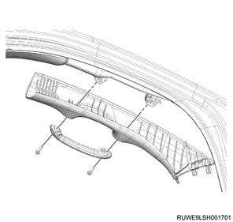
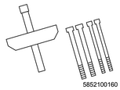
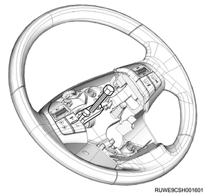
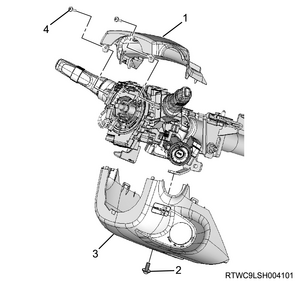
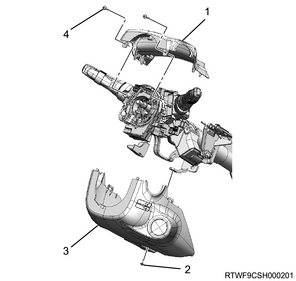
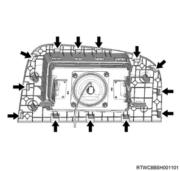
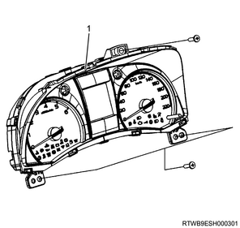

Windshield removal (All models)
1. Sill plate removal
1. Remove the sill plate from the floor.
Note
- Remove the front sill plate.

- Front sill plate
Note
- Remove the rear sill plate.

- Rear sill plate
2. Front door finisher removal
1. Remove the front door finisher from the body.

- Front door finisher
3. Rear door finisher removal
1. Remove the rear door finisher from the body.

- Rear door finisher
4. Front pillar trim cover removal
1. Remove the front pillar trim cover from the front pillar.
Note
- Remove the assist grip.
- Open the cover and remove the screw.
- Remove the front pillar trim cover by pulling its lower part upward.

5. Dash side trim pad removal
1. Remove the dash side trim pad from the body.
Note
- Remove the nut.
- Remove the trim cover clip from the body panel.

6. Center pillar lower trim cover removal
Note
- The following applies to models with pretensioners and models without airbags.
1. Remove the seat belt lower anchor bolt from the center pillar.

- Seat belt lower anchor bolt
2. Remove the center pillar lower trim cover from the center pillar.

- Center pillar lower trim cover
Note
- The following applies to models with lap pretensioners.
3. Remove the tongue side seat belt from the lap pretensioner.
Note
- Loosen the screw and open the cover.
- Remove the tongue plate from the lap pretensioner.

- Seat belt
- Tongue plate
- Screw
- Cover
- Lap pretensioner
4. Remove the center pillar lower trim cover from the center pillar.
Note
- Move the center pillar lower trim cover upward and remove the lap pretensioner from the bezel rubber.

- Bezel rubber
7. Front tongue side seat belt removal
1. Remove the adjuster cover from the center pillar.
2. Remove the seat belt upper anchor bolt from the adjuster.

- Adjuster cover
- Seat belt upper anchor bolt
8. Center pillar upper trim cover removal
1. Remove the center pillar upper trim cover from the center pillar.
Note
- Remove the cover with a small flat-blade screwdriver, etc., so as not damage the upper cover, and remove the screw.
- Remove clips from the body panel.

- Cover
- Screw
- Clip
- Retainer
- Clip
9. Tail gate weather strip removal
1. Remove the tail gate weather strip from vehicle.
- Tail gate weather strip
2. Remove the buffer from the body.
Note
- After removing the weather strip, remove the buffer so as not to damage the painted surfaces.

- Buffer
- Weather strip
10. Luggage rear trim removal
1. Remove the luggage rear trim from the floor.

- Luggage rear trim
11. Lower quarter trim cover removal
1. Remove the accessory socket from the lower quarter trim cover.
Note
- This procedure is applicable to the vehicle with accessory socket.

- Cover
- Accessory socket
2. Remove the luggage hook from the quarter panel.
Note
- Remove the cover and the screw.
3. Remove the lower quarter trim cover from the quarter panel.
Note
- Remove the cover with a small flat-blade screwdriver, etc., so as not to damage the lower quarter trim cover, and remove the screw.

- Luggage hook
- Screw
- Cover
- Cover
- Screw
- Lower quarter trim cover
12. Upper quarter trim cover removal
1. Remove the assist grip from the quarter panel.
2. Remove the seat belt lower anchor bolt from the floor.
Note
- Remove the 2nd and 3rd seat belt lower anchor bolts.
3. Remove the bezel from the quarter panel.
Note
- Bring the seat belt out through the opening in the bezel.
4. Remove upper quarter trim cover from the quarter panel.
Note
- Remove the cover with a small flat-blade screwdriver, etc., so as not to damage the upper quarter trim cover, and remove the screw.

- Upper quarter trim cover
- Screw
- Cover
- Bezel
- Screw
- Assist grip
- Cover (For vehicle with curtain airbag)
- Screw (For vehicle with curtain airbag)
- Cover
- Screw
- Bezel
13. Luggage room light removal
1. Remove the luggage room light from the head lining.
2. Disconnect the harness connector from the luggage room light.

- Head lining
- Luggage room light
14. Dome light removal
1. Remove the dome light from the head lining.
Note
- Disconnect the harness connector.

- Dome light (RH)
- Dome light (LH)
2. Remove the bezel from the head lining.
Note
- This procedure is applicable to the vehicle with the display.

- Bezel
15. Rear cooler control switch removal
1. Remove the rear cooler control switch from the head lining.
Note
- Remove the 2 claws.
- Disconnect the harness connector.
- Harness connector
- Rear cooler control switch
16. Map light removal
1. Remove the map light from the head lining.
Note
- Disconnect the harness connector.
17. Overhead console removal
1. Remove the over head console from the head lining.
Note
- Insert a steel ruler or equivalent into the hook on the lens side, and remove the overhead console by pushing the metal clip.
- Disconnect the harness connector.

- Overhead console
- Metal clip
18. Assist grip removal
1. Remove the assist grip from the head lining.
Note
- Open the cover and remove the 2 fixing screws.
- Assist grip
- Screw
19. Sun visor removal
1. Remove the sun visor from the head lining.
Note
- Remove the 2 fixing screws.

- Screw
- Sun visor
20. Sunvisor holder removal
1. Remove the sun visor holder from the head lining.
Note
- Remove the screws.

- Screw
- Sun visor holder
21. Head lining removal
1. Remove the head lining from vehicle.
Note
- Remove the 4 clips.

- Head lining
- Clip
Note
- The following applies to models equipped with exciter speaker
- Disconnect the exciter harness.

- Exciter harness
- Exciter
Note
- With the aid of an assistant, carefully slide the head lining out through the rear of the vehicle.
22. Console box removal
Note
- The following applies to the manual transmission.
1. Remove the shift lever knob from the shift lever.
2. Remove the shift console cover from the console box.
Note
- The following applies to the manual transmission.

- Shift lever knob
- Shift console cover
- Cover (2WD models)
- 4WD switch (4WD models)
Note
- The following applies to the automatic transmission.

- Shift console cover
- Cover (2WD models)
- 4WD switch (4WD models)
Note
- Disconnect the cigarette lighter connector.
- The following applies to the 2WD model.
3. Remove the cover from the console box.
Note
- The following applies to the 4WD model.
4. Remove the 4WD switch from the console box.
Note
- Disconnect the 4WD switch connector.
5. Remove the console box from the floor.
Note
- Remove the parking brake cover from the console box.
- Remove the 2 clips and the 1 screw.
- Open the console box cover and remove 2 screws.
- Remove the control box backward.

- Cover (2WD models)
- 4WD switch (4WD models)
- Screw
- Parking brake cover
- Console box
- Clip
23. Glove box removal
1. Remove the glove box from the instrument panel.

- Glove box
- Instrument panel assist side lower cover
24. Instrument panel assist-side lower cover removal
1. Remove the instrument panel assist-side lower cover from the instrument panel.
Note
- Remove the 4 screws.

25. Air bag assembly safety information
Note
- Handling of a deployed airbag assembly
Warning
- When handling the airbag, the safety precautions must be observed.
- A small amount of sodium hydroxide may be contained on the surface of a deployed airbag.
- This is a by-product of the deployment reaction and may cause irritation if contact is made with skin or eyes.
- To handle activated airbag, wear gloves and safety glasses.
- After handling, wash your hands with soap.
Note
- Handling of an undeployed airbag assembly
Warning
- When carrying an undeployed airbag, make sure that the trim cover faces the opposite direction of your body.
- When carrying the airbag, never hang the connector or harness on your hand.
- When putting down an undeployed airbag, make sure to face the trim cover upward.
- Do not place any other item on the steering wheel with the airbag surface facing downward.
- Not following this procedure will result in a fire or injuries.
Caution
- After the airbag is deployed, inspect for burning due to overheating, melting or other problems.
- If the SRS coil assembly is damaged, replace it.
26. Battery ground cable disconnect
1. Disconnect the battery ground cable from the battery.
Caution
- Do not disconnect within 1 minute after turning OFF the ignition switch.
27. Driver air bag assembly removal
Note
- Verify the holes located on the both sides of the steering cover.

Note
- Verify the lever position in the hole with the illustration below.

Note
- Insert a bar of diameter 6 mm {0.24 in} to remove the driver airbag assembly from the lever.

1. Remove the driver air bag assembly from the steering wheel.
2. Disconnect the connector from the driver air bag assembly.
Note
- Disconnect the airbag connector.
- Disconnect the horn connector.

- Airbag connector
- Horn connector
Warning
- Keep the airbag assembly away from your body when carrying it.
- When putting down an undeployed airbag assembly, make sure to face the trim cover upward.
- Place the trim cover upward on a flat surface.
- Failure to follow this procedure may result in personal injury.

28. Steering wheel removal
Note
- Reconfirm that the steering wheel is set to the position for advancing straight forward.
- Make setting marks on the steering wheel and shaft.
- They are used for reassembly of parts.

1. Remove the nut from the steering shaft.
2. Remove the steering wheel from the steering shaft using special tool.

SST: 5-8521-0016-0 - steering wheel remover

Caution
- Never apply an impact to the steering wheel with a hammer, etc. to remove it.
- The steering shaft is designed to absorb shocks.
29. Meter cluster removal
1. Remove the meter cluster from the instrument panel.
Note
- Pull out 4 clips from the instrument panel.
- Disconnect the switch connector.

- Clip
30. Instrument panel driver-side lower cover removal
1. Remove the hood lock control lever from the instrument panel driver-side lower cover.
Note
- Remove the 2 fixing screws.

- Hood lock control lever
- Control cable
- Screw
2. Remove the fuel filler lid opener lever from the instrument panel driver-side lower cover.
Note
- Remove the 2 fixing screws.

- Fuel filler rid opener lever
- Fuel filler rid cable
- Screw
3. Remove the instrument panel driver-side lower cover from the instrument panel.
Note
- Pull out the instrument panel driver side lower cover.
- Disconnect the switch connector.
- Remove the DLC.
- Models without PESS

- Instrument panel driver side lower cover
- DLC
Note
- Models with PESS
- Instrument panel driver-side lower cover
- DLC
31. Steering cowl removal
1. Remove the steering cowl from the steering column.
Note
- Remove the steering cowl lower mounting screw from the steering cowl lower.
- Remove the steering cowl lower from the steering column.
- Remove the steering cowl upper mounting screws from the steering cowl upper.
- Remove the steering cowl upper from the steering column.
- Models without PESS

- Steering cowl upper
- Steering cowl lower mounting screw
- Steering cowl lower
- Steering cowl upper mounting screw
Note
- Models with PESS

- Steering cowl upper
- Steering cowl lower mounting screw
- Steering cowl lower
- Steering cowl upper mounting screw
32. Assist side lid cover removal
1. Remove the assist side lid cover from the instrument panel.
Note
- Remove the 2 screws.

- Screw
- Assist side lid cover
- Instrument panel
33. Passenger air bag assembly removal
1. Remove the passenger air bag assembly from the instrument panel.
Note
- Remove the 2 bolts.

- Passenger airbag mounting bolts
Caution
- Remove carefully as claws are attached.

34. Instrument panel cluster removal
1. Remove the instrument panel cluster from the instrument panel.

- Instrument panel cluster
35. Front cover removal
Note
- The following does not apply to auto A/C
1. Remove the front cover from the instrument panel.

- Front cover
- Instrument panel
36. Sun sensor removal
1. Remove the sun sensor from the instrument panel.
Note
- Remove it from the instrument panel together with the front cover.
2. Disconnect the harness connector from the sun sensor.
3. Remove the sun sensor from the front cover.

- Sun sensor
- Front cover
- Instrument panel
37. Control cable removal
1. Disconnect the control cable from the blower assembly.
Note
- Remove the control cable from the link section of the blower assembly.
- Disconnect the control cable from the lock clamp section.

- Clamp
- Link
- Blower assembly
- Control cable
38. Control lever assembly removal
Note
- The following does not apply to auto A/C
1. Remove the control lever assembly from the instrument panel.
Note
- Remove the clips at 4 corners, and pull the control lever assembly towards you.
- Disconnect the 1 harness connector and the mode adjust cable.

- Instrument panel
- Control lever assembly
- Glove box
- Instrument panel assist-side lower cover
39. Control panel assembly removal
Note
- The following applies to auto A/C
1. Remove the control panel assembly from the instrument panel.
Note
- Pull the clips at 4 corners towards you.
- Disconnect 1 of the harness connector connections.

- Instrument panel
- Control panel assembly
40. Instrument panel removal
1. Remove the speaker grille from the instrument panel.
Note
- Remove the left and right speaker grilles.
2. Remove the side cover from the instrument panel.
Note
- Remove the left and right side covers.

- Right side cover
- Instrument panel
3. Remove the instrument panel assembly and reinforcement from vehicle.
Note
- Remove the 4 bolts that fix the steering column to the reinforcement.

Note
- Disconnect the dash harness connector.
- Remove the bolt and nut that secure the instrument panel and reinforcement assembly.

41. Wiper arm cover removal
1. Remove the wiper arm cover from the wiper arm.
42. Wiper arm removal
1. Remove the wiper arm from vehicle.
Note
- Remove the nut to remove the wiper arm and the blade.

- Wiper arm cover
- Nut
- Wiper arm, blade
43. Side cowl cover removal
1. Remove the side cowl cover from the body.

- Side cowl cover
44. Engine hood rear seal removal
1. Remove the engine hood rear seal from the cowl cover.
Note
- Remove the clip.
- Remove the engine hood rear seal from the hook of the cowl cover.

- Engine hood rear seal
- Hook
45. Cowl cover removal
1. Remove the cowl cover from the body.
Note
- Remove the washer hose.

- Cowl cover
46. Room mirror removal
1. Remove the room mirror from the front windshield glass.
Note
- Remove the screw and pull out the room mirror upward.

47. Front windshield glass removal
1. Remove the front windshield glass from the body.
Note
- Follow the procedures described below to carefully remove the front windshield glass.
- Cut open the adhered caulking material with a knife.
- Secure one end of 0.5 mm {0.02 in} diameter piano steel wire to a piece of wood to use it as a handle.
- Pierce the other end of the piano wire through the caulking material adhered to the edge of the front windshield glass using 2 pairs of needle nose pliers.
- Secure the other end of the piano wire to another piece of wood.
- Carefully move the piano wire like a saw with an assistant worker to cut out the caulking material adhered over the entire edge of the front windshield glass.
- Piano wire
- Cement
- A rectangular piece of wood, etc. attached to both ends of the piano wire
- Front windshield glass
Note
- Suspend the front windshield glass from the body.
- Remove the remaining caulking material from the body portion holding the front windshield glass.
- Wipe off the caulking material remaining on the front windshield glass with a soft cloth and lead-free gasoline.